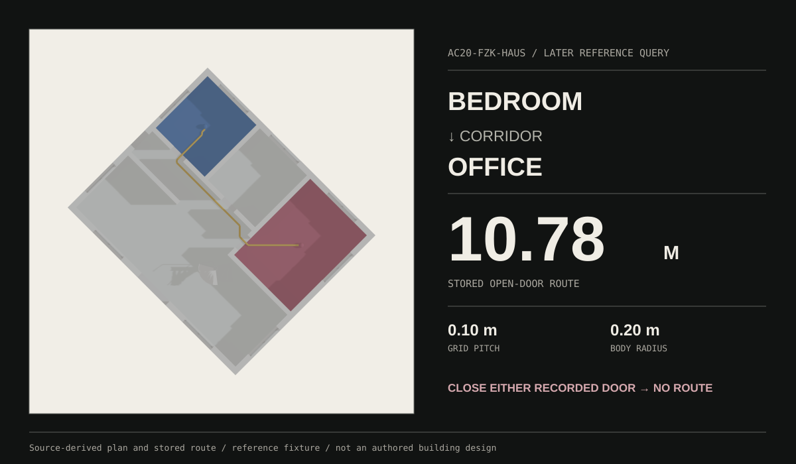
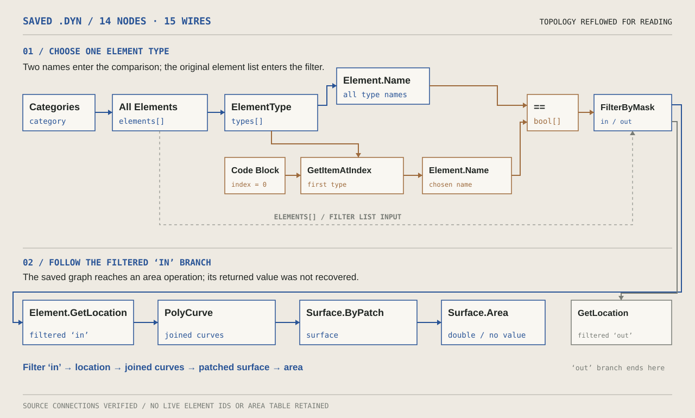
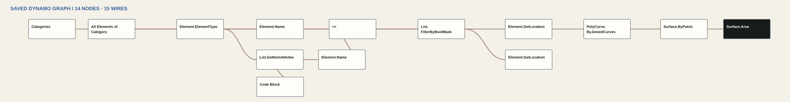
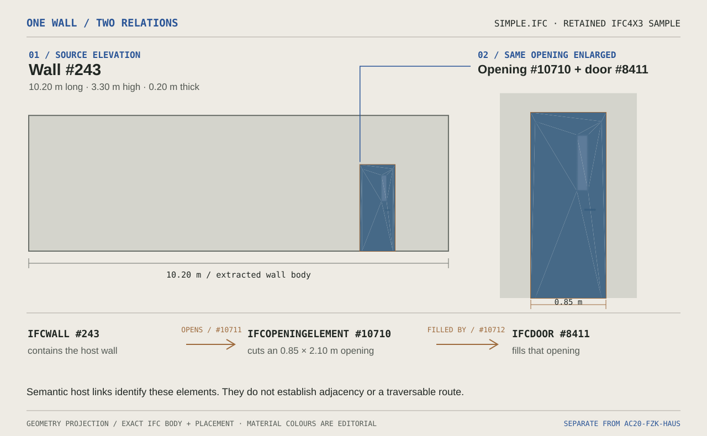
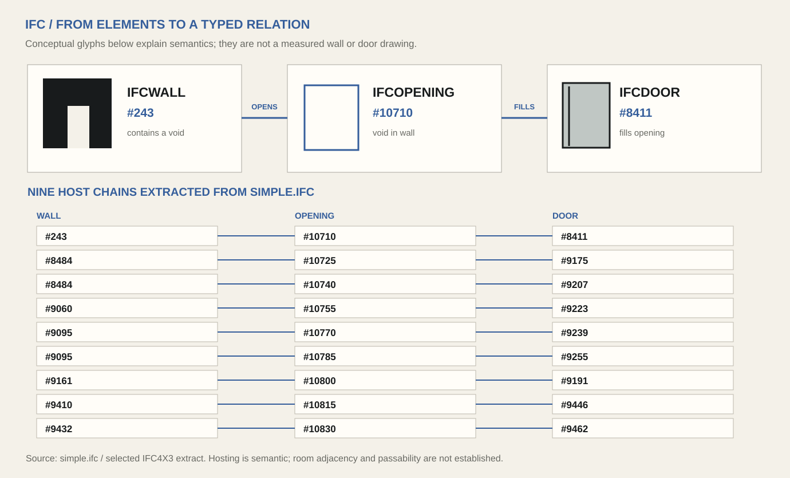
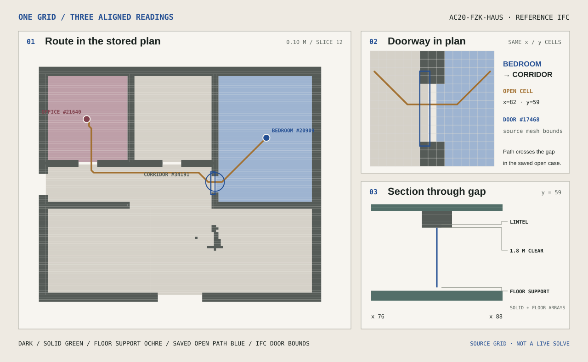
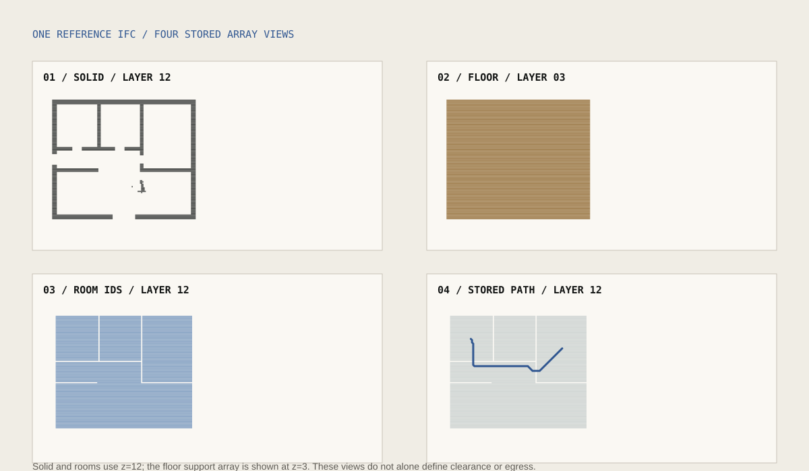
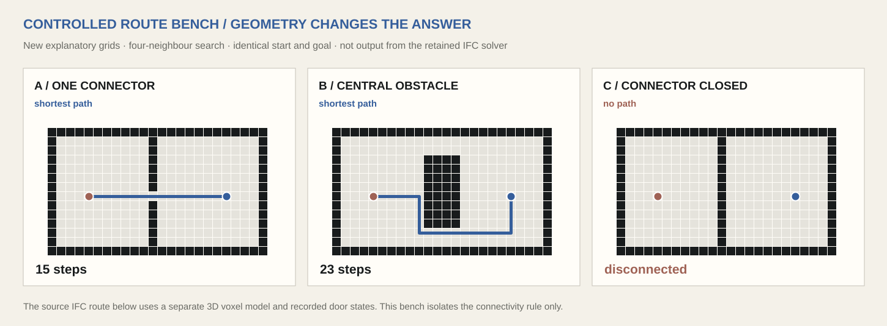
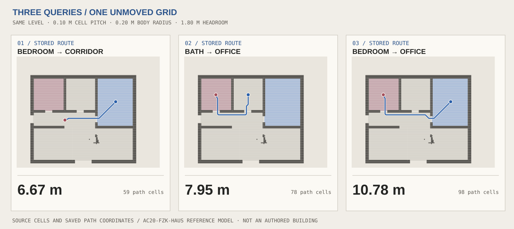
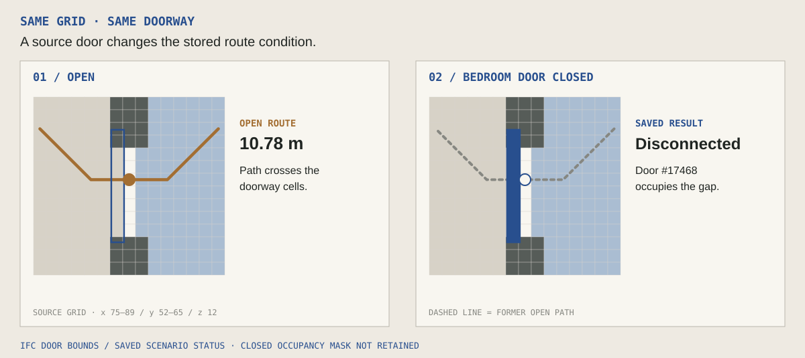

From model
to route.
Three separate records make building information inspectable: a saved Dynamo definition, an IFC relationship sample, and a later route study in a reference building. The route shown here belongs to that last study.

From category to area.
The saved definition selects elements by type, builds a surface from their locations and reaches an area operation. A returned Revit value was not retained.


Source: kiarash taheri - mohammadreza hoseiny.dyn. The saved connections establish the intended operation, but no live element IDs, output area or exact RVT pairing have been verified. A separate “natural light” definition extracts room, opening and orientation information; it does not simulate daylight.
A wall, an opening, a door.
The source IFC connects these exact three entities. Its body geometry shows where the opening cuts the wall and where the door sits; the two relation IDs explain how the file names that connection.

simple.ifc; THE WALL VOID FOLLOWS RELATION #10711. MATERIAL COLOURS ARE EDITORIAL. SOURCE, BOUNDS AND DERIVATION ↗Inspect all nine extracted wall–opening–door chains

This simple.ifc sample is distinct from the AC20-FZK-Haus route fixture below. Hosting and filling relationships do not establish room adjacency, passability or a current Revit query.
What makes this doorway passable?
At the bedroom door, the saved route crosses one open cell band. The same coordinates show its solid walls, floor support and vertical clearance. Closing the recorded door disconnects the selected pair below.

Inspect the retained array views and controlled route tests


The controlled 2D tests are new explanatory models; they are not outputs from this IFC solver. Open the original selected slice ↗
The older 52 × 82 × 40 voxel array lacks coordinate metadata and is not substituted for this reference grid. This is a stored same-floor route study, not a live solver or egress approval.
Bedroom → office.
Follow the stored 10.78 m bedroom-to-office route. Closing either recorded door disconnects this pair in the saved study.


Schlafzimmer → Buero
In the stored scenario, the path passes through the corridor and the two recorded doors. Select a saved door state. The cutaway, plan and result show the same condition.
Open route / 0.10 m pitch / 0.20 m body radius
Plan combines actual source-derived solid and room cells with the stored route coordinates. Each closed cutaway removes the open route and highlights the exact retained IFC door mesh. The plan marks the same door at its saved coordinates. These are stored scenario results, not a live route calculation. Door geometry and derivation ↗
At 0.15 and 0.20 m pitch, the same selected study recorded 10.96 and 11.23 m routes. A 0.40 m body radius failed at 0.10 m pitch. The algorithm has no cross-level travel in this record. Selected route data ↗ · All 15 pairs ↗
Three records, one question.
The saved Dynamo graph, the IFC semantic sample and the later voxel route were not one completed historical application. Together they expose the same design question: how can model information be made inspectable and tested?
Dynamo component topology, IFC entity IDs and typed relations, route data and the source-derived cutaway.
Revit graph-to-model output binding, an authored building replacement for the fixture, and a successful read-only natural-language query with source citations.